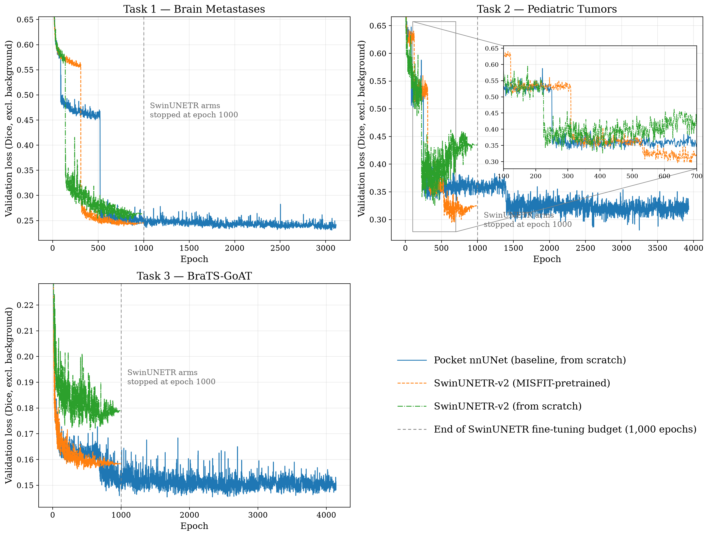
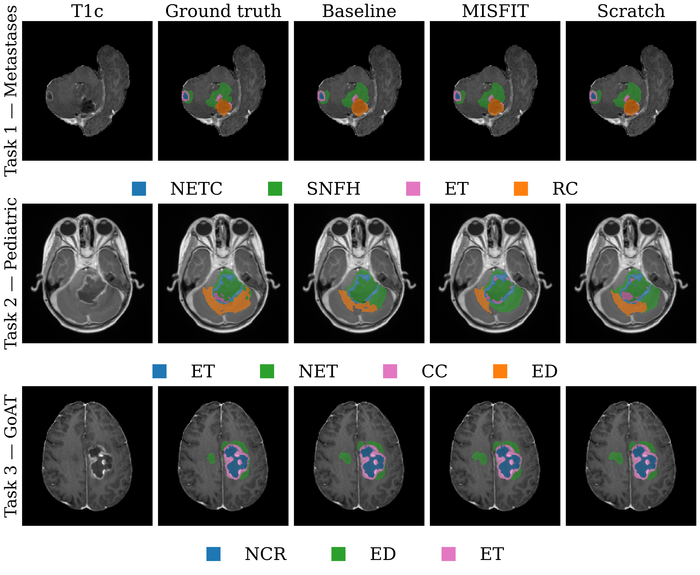

1The University of Texas MD Anderson Cancer Center, Houston TX2Rice University, Houston TX
Despite continued architectural innovation in medical image segmentation, reported performance gains are not always reproducible, and standardized tooling for consistent comparisons remains scarce. We address this with MIST, our modular, end-to-end framework for training, testing, and evaluating segmentation methods in a standardized, reproducible manner — which placed 3rd in the 2024 and 2025 BraTS challenges. For BraTS 2026 we enter three tasks — brain metastases, pediatric tumors, and cross-population generalizability — each testing a different kind of generalization.
This year we also debut MISFIT, our in-development framework for self-supervised pretraining of 3D medical-imaging encoders via masked autoencoding (MAE). We use it to pretrain a SwinUNETR-V2 encoder on a pooled, cross-task corpus of over 16,000 unlabeled MRI volumes spanning all three tasks' training data.
| Task | Cohort | Train | Held-out | Regions |
|---|---|---|---|---|
| 1 | Brain metastases | 1,196 | 179 | NETC, SNFH, ET, RC |
| 2 | Pediatric tumors | 294 | 91 | ET, NET, CC, ED |
| 3 | BraTS-GoAT | 1,351 | 450 | ET, TC, WT |
MISFIT pretrains 3D medical-imaging encoders with masked autoencoding (MAE), independent of MIST. We pooled every training-split MRI volume across all three tasks into 16,315 single-channel volumes, masked 75% of each crop, and trained a SwinUNETR-base encoder for 200 epochs to reconstruct it. That encoder was then transferred into MIST's SwinUNETR-base segmentation architecture.
The two SwinUNETR arms are matched on everything but initialization, isolating the pretraining effect. The baseline differs in architecture, patch size, and budget too, so it tests the full pipeline instead.
5-fold cross-validation; the baseline trained up to 5,000 epochs/fold (mean 3,107–4,252 actual), both SwinUNETR arms exactly 1,000. Arms are compared via BraTS-style average rank (MIST's mist_rank) and a two-sided Wilcoxon signed-rank test (α = 0.05).
Supported in part by CPRIT RP250154, NIH R01CA301555, and R01CA195524, and the MD Anderson QIAC Partnership in Research.
| 5-fold cross-validation | Held-out validation | |||||
|---|---|---|---|---|---|---|
| Task | Base | MISFIT | p | Base | MISFIT | p |
| 1 | 1.503 | 1.497 | 0.62 | 1.427 | 1.573 | 1.5×10⁻⁴ |
| 2 | 1.528 | 1.472 | 0.026 | 1.503 | 1.497 | 0.83 |
| 3 | 1.518 | 1.482 | 0.0072 | 1.513 | 1.487 | 0.32 |
| Task | MISFIT | Scratch | p | MISFIT | Scratch | p |
| 1 | 1.439 | 1.561 | 2.1×10⁻⁵ | 1.436 | 1.564 | 0.0024 |
| 2 | 1.457 | 1.543 | 0.035 | 1.440 | 1.560 | 0.0053 |
| 3 | 1.416 | 1.584 | 1.9×10⁻¹³ | 1.424 | 1.576 | 7.4×10⁻⁵ |
Against the matched control, MISFIT pretraining wins on all three tasks under both protocols — the isolated effect is real. Against the established baseline, the picture reverses: CV favors the pretrained pipeline on Tasks 2–3, but that vanishes on held-out validation, where the baseline pulls significantly ahead on Task 1 (p = 1.5×10⁻⁴).

